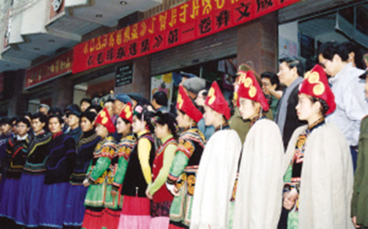
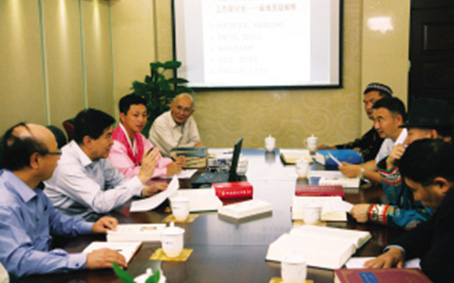

党和国家领导人著作翻译：让中国化的马列主义照耀各族人民
2015年12月11日 来源：《中国民族报》

《毛泽东选集》第一卷彝文版出版发行仪式

各语种翻译专家在《习近平谈治国理政》翻译研讨会上热烈讨论
从《毛泽东选集》到《周恩来选集》、《刘少奇选集》、《朱德选集》，再到《邓小平文选》、《江泽民文选》、胡锦涛系列讲话，以及《习近平谈治国理政》等，中国民族语文翻译局所翻译的几代中央领导人著作，不仅最全面，而且最权威、最系统。
彝语文翻译室译审王昌富记得，从1990年起彝文室花3年时间翻译《毛泽东选集》的场景。“共4卷，100多万字，这是彝文翻译室翻译规模最大的一部著作。”王昌富说，“1995年开始，又翻译《邓小平文选》，这部书出来后，对彝族聚居区加大改革开放起到了有力的理论引导作用。”
2008年，彝语文室在翻译《江泽民文选》期间，正好遇上了汶川大地震。那时候，翻译组正在成都做译稿的校对工作。“我们的办公地点是在一幢办公楼的五层，为了预防余震，我们把办公地点搬到了四川省体育馆，大家就在临时居住的帐篷里完成了校对工作。”王昌富说，校对完的稿件要录入电脑排版，当时只有一部电脑，他们就将电脑放在一楼的门口使用，工作人员一边操作，一边还要提防余震。但就是在这样艰苦的情况下，彝文版的《江泽民文选》按时且高质量地完成了。
《习近平谈治国理政》一书，是翻译局今年上半年承担的新任务。这本书有30万字，翻译时间紧、任务重，所以几个语种均采取了集中人员重点翻译的工作方式。
维吾尔语文室主任阿布力孜介绍，维吾尔文室抽调了八九名翻译人员，按照统一要求，直接入住工作驻地，进行封闭式管理。大家白天翻译校对，晚上在驻地休息，随时讨论商议，可谓足不出户，连节假日都没有。
虽然翻译人员都面临着各种困难，如有的工作人员孩子要高考，有的人父母生病要照顾，可大家感到最大的困难还是来自于翻译本身，尤其是著作中大量诗词和典故的翻译。
“习总书记文化底蕴深厚，他在讲话中时常引经据典。比如，他在北大师生座谈会上的讲话《青年要自觉践行社会主义核心价值观》一文，就引用了《礼记•大学》中的‘大学之道，在明明德，在亲民，在止于至善’。此外，还有《论语》、《孟子》等著作中的名言，一共40多处。”阿布力孜说，这些内容，对汉族读者来说都未必能理解，如何让维吾尔族读者来理解呢？“我们只有不断地与专家探讨，并查阅诸如《论语》的维吾尔文译本，再根据文章的语境调整翻译方式。”
据介绍，中国民族语文翻译局仅用了87天，就圆满完成了《习近平谈治国理政》蒙古、藏、维吾尔、哈萨克、朝鲜文等5个文种、130余万字的翻译审定工作。这部书的及时翻译出版，对帮助民族地区的干部群众深刻理解和掌握以习近平同志为总书记的党中央的治国理念和执政方略，起到了重要的作用。